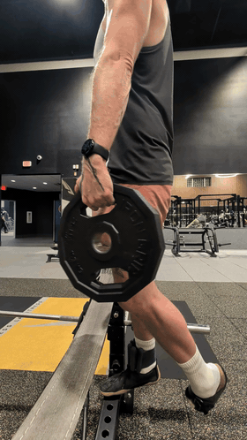
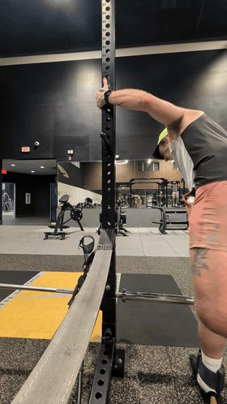
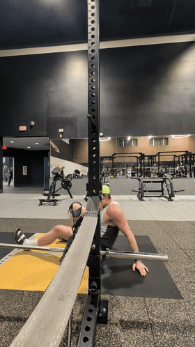
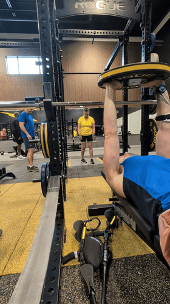
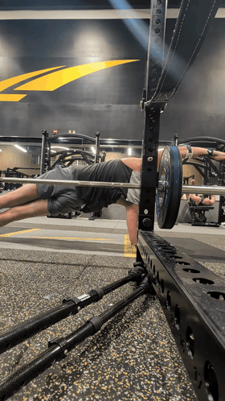
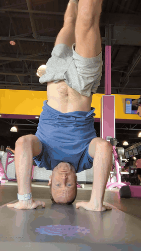
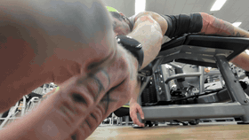
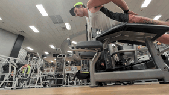

#1 · score 8The subject is actively engaged in a pulling motion with a clear focus on the back muscle.
exercise_name: Barbell Row (Partial)
💭 The frame focuses on the setup for a heavy pull, showing the connection between the bar and the body.

#2 · score 8The arm is in a deep stretch or controlled lowering phase of a pulling movement.
exercise_name: Lat Pulldown/Row (Partial)
💭 The subject is wearing a dark tank top and a blue headband. The lighting is bright, highlighting the muscle tone.

#3 · score 8The subject is holding a plank position with visible tension in the core.
exercise_name: Plank/Core Exercise
💭 The subject is performing an exercise on a padded surface, using an implement that appears to be a strap or handle for the arms.

#1 · score 9The lifter is at the top of the concentric phase of the bench press, holding the barbell with arms fully extended and elbows locked, demonstrating a strong peak position.
exercise_name: Bench Press
💭 The gym is equipped with Rogue brand power racks and bumper plates. The lifter is wearing a blue and black tank top and pink shorts. A pair of rowing machines is visible on the floor in the foreground.

#2 · score 9The subject is performing a weighted dip with excellent form, maintaining a straight line from head to heels and keeping the torso rigid.
exercise_name: Weighted Dips
💭 The subject is wearing a grey t-shirt and shorts. The camera is positioned low to the ground, looking up at the subject, which emphasizes the length of the body and the equipment. The gym has a modern, industrial look with black walls and yellow accents.
 #3 · score 9
#3 · score 9
The subject is performing a pull-up with a strong, controlled grip and visible muscle engagement.
exercise_name: Pull-up
💭 The subject is wearing a blue tank top and white shorts, with a tattoo on their left arm. The gym environment includes various exercise equipment and a mirror reflecting the scene. The camera angle is from below, emphasizing the subject's upper body and grip strength.

#1 · score 9The subject is holding a stable headstand with hands placed correctly for support and legs extended vertically.
exercise_name: Headstand
💭 The subject is wearing a light blue watch on their left wrist and has earbuds in. The camera is placed on the floor looking up, creating a dramatic perspective.

#2 · score 8The subject is in the peak contraction phase of a rear delt fly, maintaining a stable chest position on the bench with arms extended.
exercise_name: Chest Supported Rear Delt Fly
💭 The subject is wearing a neon green cap and a white tank top; the shot is taken from a very low angle, likely with the camera placed on the floor.

#3 · score 8The subject is in the peak contraction phase of a fly movement with good chest extension, though the low camera angle obscures the full range of motion.
exercise_name: Incline Dumbbell Fly
💭 The shot is taken from a very low angle, likely with the camera placed on the floor, which creates a dramatic, heroic perspective of the lifter.